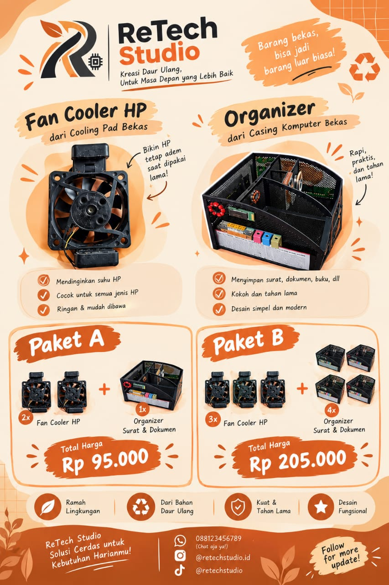

Tugas Alif

Lihat Rumus
Permisalan:
x= harga 1 Fan Cooler HP
y= harga 1 Organizer Surat & Dokumen
Permodelan
2x+y=95.000...persamaan 1
3x+4y=205.000...persamaan 2
Penyelesaian
•Metode eliminasi
2x+y=95.000 |×3
3x+4y=205.000 |×2
6x+3y=285.000
6x+8y=410.000 (dikurangi)
-5y= -125.000
-y= -125.000 : -5
y= 25.000
•Metode substitusi
2x+y=95.000
2x+25.000=95.000
2x=95.000-25.000
2x=70.000 : 2
x=35.00
Jadi,
-Harga 1 Fan Cooler Hp adalah Rp25.000 dan
-Harga 1 Organizer Surat & Dokumen adalah Rp35.000
Tugas Zira

Lihat Rumus
Permisalan
x= harga 1 hiasan meja dari keyboard bekas
y= harga 1 alat penyiram tanaman otomatis
Permodelan
2x+3y=175.000
x+2y=105.000
Penyelesaian
•Metode eliminasi
2x+3y=175.000 |×1
x+2y=105.000 |×2
2x+3y=175.000
2x+4y=210.000 (dikurangi)
-1y= -35.000
y=35.000
•Metode substitusi
2x+3y=175.000
2x+3(35.000)=175.000
2x+105.000=175.000
2x=175.000-105.000
2x=70.000
x=35.000
Jadi, harga 1 hiasan meja dari keyboard bekas adalan Rp 35.000 dan harga 1 alat penyiram tanaman otomatis adalah Rp 35.000
Tugas Wildan

Lihat Rumus
Permisalan
x= harga 1 jam dari hdd
y= harga 1 lampu tidur otomatis
Permodelan
2x+y=170.000
x+2y=190.000
Penyelesaian
•Metode eliminasi
2x+y=170.000 |×2
x+2y=190.000 |×1
4x+2y=340.000
x+2y=190.000 (dikurangi)
3x= 150.000
x=150.000 ÷ 3
x=50.000
•Metode substitusi
2x+y=170.000
2x(50.000)+y=170.000
100.000+y=170.000
y=170.000-100.000
y=70.000
Jadi, harga 1 jam dari hdd adalah Rp 50.000 dan harga 1 lampu tidur otomatis adalah Rp 70.000